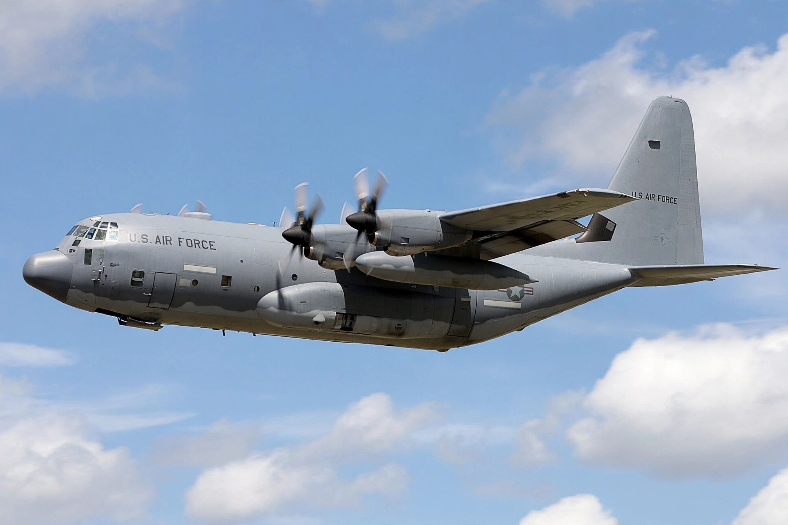

The Lockheed C-130 Hercules is an American four-engine turboprop military transport aircraft designed and built by Lockheed (now Lockheed Martin). First flown in 1954, it is the longest continuously produced military aircraft.

Capable of short, unprepared runway operations, the C-130 has a high wing, rear loading ramp and large cargo hold. Variants serve as gunships (AC-130), tankers (KC-130), weather reconnaissance, search and rescue, and ski-equipped Antarctic support aircraft.
Used by more than 60 nations, the Hercules has served in wars, humanitarian relief and disaster response since the 1950s. The modernised C-130J Super Hercules features new engines and avionics.